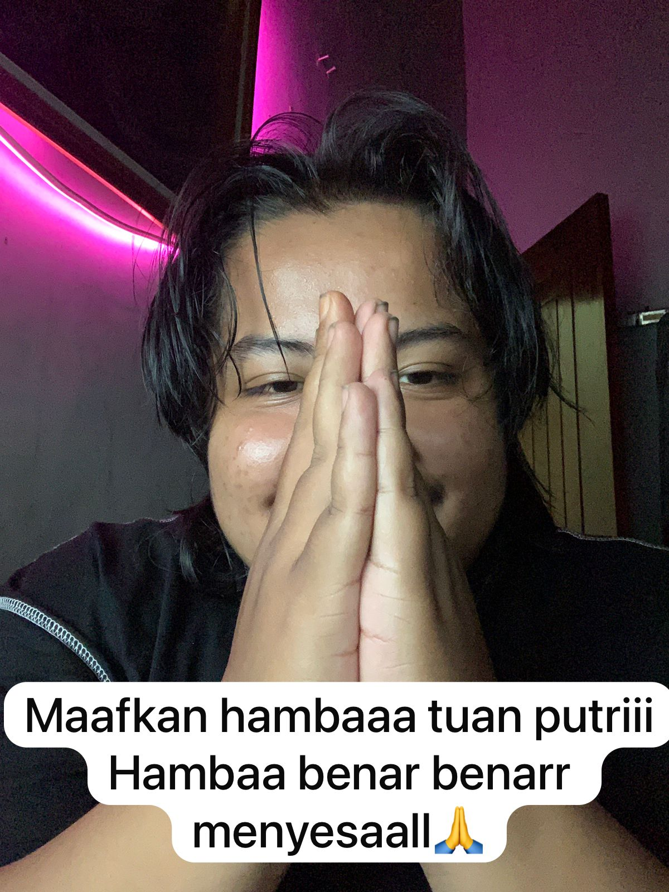

Halloww sayang selamat pagiiiiii.
Kalo kamu bukaa inii berati kamu sudah bangun dan mentari mulai terbit, mungkin bagi kamu ini cuma kartu ucapan biasa yaaa
Tapiii ini benerann permintaan maaf akuu sayangg buat kamuu soal yang semalemmm, maaf yaa sayangg udah ngerusak mood mu di akhir hari
Maaff bangetttt semalem udah bikin kamu ga nyamannn padahal kamu lagi ngerjain tugassss, harusnya aku ngertiii bukan malah isengin kamuu
Udahhh yaaa sayangggg jangan cuekinn akuu lagiiiii, kaloo kamu cuekk sama akuu gimanaa duniakuu mau bersinarr orang matahari nya aja gak mau menyinari dunianya
Akuu beneran mintaaa maaff bangeettt, samaa mau ngucapin terimakasih jugaaaa
Semogaa hari inii, harimu lebihh bahagiaa dari hari kemarin yaaa sayanggg, kalau butuh apa apaa ngomong aja ke aku aku ada disinii nungguin kamuuu, I loveee youu sayangg
